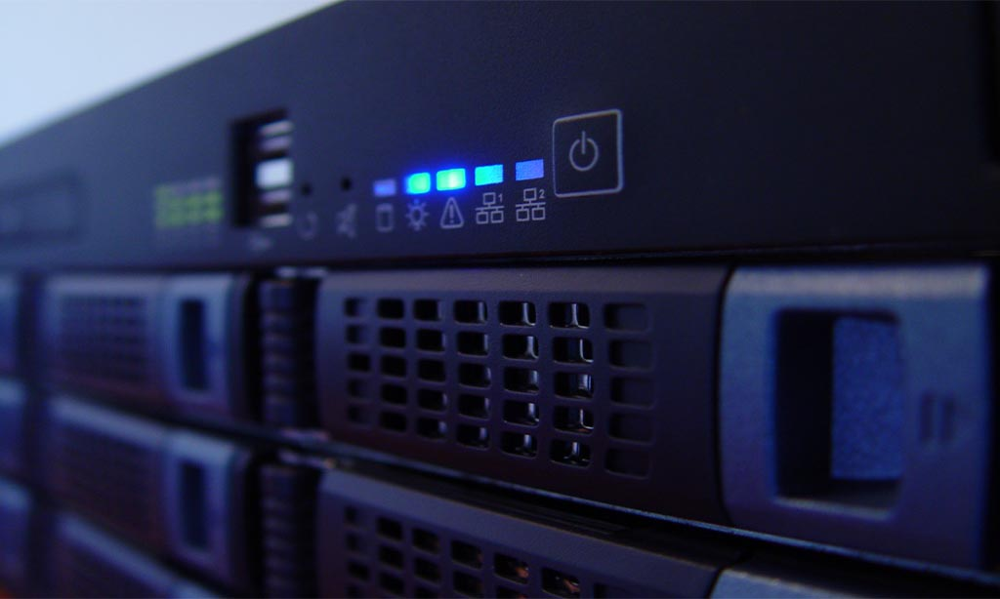

Paso 1
Paso 1
1. Nos cuentas tu caso
LLamas, escribes por el formulario o nos escribes por el chat. Escuchamos qué necesita tu empresa y qué problemas tiene.

Un servicio principal de soporte completo y todo el equipamiento que tu empresa necesita para crecer de KB a GB.
Nuestro servicio estrella: atendemos las incidencias de tu empresa de principio a fin.
Protegemos la red de la empresa frente a ataques con un firewall profesional, configurado y mantenido por nuestro equipo.

DF Server es nuestro software de servidor: centraliza los archivos, los dominios y los servicios de red de la empresa en un solo panel. Lo instalamos sobre Windows Server en máquinas virtuales, adaptado al tamaño de tu empresa.

Ordenadores, servidores, dominios y todo el material necesario para los puestos de trabajo y la empresa.


Un método claro en cuatro pasos, desde que nos contactas hasta que todo funciona.
Paso 1
LLamas, escribes por el formulario o nos escribes por el chat. Escuchamos qué necesita tu empresa y qué problemas tiene.
 Paso 2
Paso 2
Revisamos tus equipos y tu red, y te proponemos una solución ajustada a tu tamaño y presupuesto, sin compromiso.
Montamos los equipos, el servidor y la seguridad (firewall, dominio, copias de seguridad) sin interrumpir tu trabajo más de lo necesario.
 Paso 4
Paso 4
No desaparecemos después de la venta: mantenemos, actualizamos y respondemos cuando algo va mal. Tu negocio sigue creciendo de KB a GB.
Lo que más nos preguntan nuestros clientes antes de empezar.
Las incidencias se atienden el mismo día y las urgencias tienen respuesta inmediata por teleasistencia. El teléfono de servicio es 900 000 000, con atención de lunes a viernes de 9:00 a 18:00 y guardia para incidencias críticas.
Sí. De hecho, DF Server Small (nuestra licencia de entrada del software DF Server) está pensado para pymes que empiezan: dominio, archivos e impresión a un precio accesible, y crece contigo.
Revisiones periódicas, actualizaciones de seguridad, monitorización de copias de seguridad y ajustes de la red, además de soporte cuando surge cualquier problema.
Los dos. En la tienda hay equipos para personas (Home PC, Laptop 14, Mini PC, Box NAS) y para empresas (servidores con DF Server preinstalado, racks y SAIs).
Cuéntanos qué necesita tu empresa y prepararemos una propuesta.